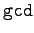
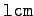
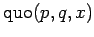
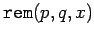
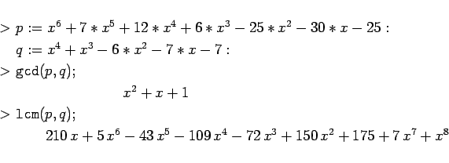
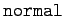
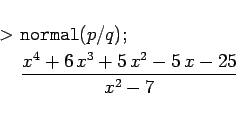
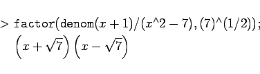

Inhalt Index DeskTop Bronstein

 Computeralgebrasysteme Anwendungen von Computeralgebrasystemen Manipulation algebraischer Ausdrücke Maple
Computeralgebrasysteme Anwendungen von Computeralgebrasystemen Manipulation algebraischer Ausdrücke Maple


Neben den schon bekannten Operationen sind vor allem die Operationen  und  von Bedeutung. Sie finden den größten gemeinsamen Teiler (ggT) bzw. das kleinste gemeinsame Vielfache (kgV) zweier Polynome. Entsprechend liefern  den ganzzahligen Anteil der Division der Polynome p und q und  den Rest.
| Beispiel |
|

|
Mit dem Befehl  kann man den Quotienten zweier Polynome über dem Körper der rationalen Zahlen in Normalform bringen, d.h. als Quotienten zweier gekürzter Polynome darstellen.
| Beispiel |
|
Mit den Polynomen des voranstehenden Beispiels wird 

|